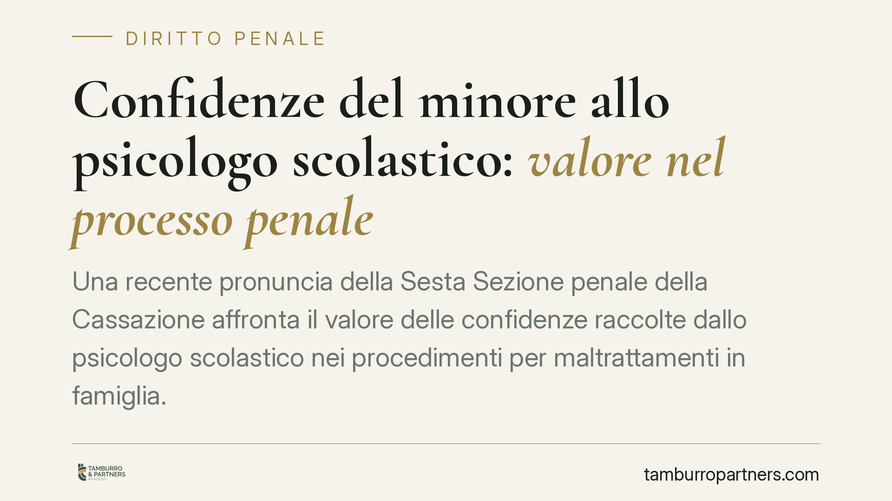

Confidenze del minore allo psicologo scolastico: valore nel processo penale
Una recente pronuncia della Sesta Sezione penale della Cassazione affronta il valore delle confidenze raccolte dallo psicologo scolastico nei procedimenti per maltrattamenti in famiglia. La relazione clinica può entrare nel processo come prova documentale, non come testimonianza indiretta. Una soluzione che incide sulla difesa del genitore imputato e sulla tutela del minore, ma che solleva questioni ancora aperte.

Il caso e il principio
Il tema è delicato: un minore, nel corso di colloqui ordinari con lo psicologo della scuola, riferisce episodi riconducibili a condotte di maltrattamento in famiglia. Quelle confidenze, poi trasfuse in una relazione clinica, possono essere utilizzate nel processo penale contro il genitore? E come?
Secondo una recente pronuncia della Sesta Sezione penale della Corte di Cassazione, la relazione dello psicologo scolastico può essere acquisita come prova documentale ai sensi dell'art. 234 c.p.p. La Corte distingue inoltre tra il colloquio clinico ordinario e l'ascolto del minore condotto in funzione del processo, chiarendo che la Carta di Noto — il protocollo che fissa le cautele per l'ascolto del minore a fini probatori — non vincola i colloqui psicologici svolti nel contesto scolastico, nati con finalità di sostegno e non di accertamento.
> Nota sugli estremi: il numero esatto della sentenza è in corso di verifica. Ci riferiamo qui al principio di diritto espresso dalla Sesta Sezione penale.
Inquadramento normativo
Il procedimento riguarda il reato di maltrattamenti contro familiari e conviventi (art. 572 c.p.), fattispecie abituale che punisce le condotte vessatorie reiterate nel nucleo familiare.
Il nodo processuale è il confine tra due regimi probatori. Da un lato l'art. 195 c.p.p. disciplina la testimonianza indiretta (de relato): chi riferisce in aula ciò che ha appreso da altri è tenuto, su richiesta, a indicare la fonte, che può essere chiamata a deporre. Dall'altro, l'art. 234 c.p.p. consente l'acquisizione di documenti che rappresentano fatti o dichiarazioni.
Qualificare la relazione come documento significa sottrarla, in parte, alle regole della prova dichiarativa. La soluzione, tuttavia, non è esente da critiche in dottrina, che vi ravvisa il rischio di una testimonianza indiretta mascherata: un atto scritto che, veicolando le parole del minore, può aggirare le garanzie dell'art. 195 c.p.p. Il tema resta quindi controverso e andrà monitorato negli sviluppi giurisprudenziali.
Cosa cambia nella pratica
Le ricadute variano a seconda della posizione.
Per il genitore imputato. La relazione acquisita come documento entra nel fascicolo con un peso diverso rispetto a una semplice testimonianza de relato. La difesa deve verificare le modalità con cui le confidenze sono state raccolte e sollecitare il contraddittorio sulla fonte, perché la natura documentale non può trasformarsi in una scorciatoia probatoria che preclude il confronto.
Per il minore e per chi ne cura gli interessi (parte offesa). La distinzione tutela il minore: il colloquio clinico resta uno spazio di sostegno, non un interrogatorio. È essenziale che lo psicologo mantenga la relazione nei binari dell'ascolto e non la trasformi in raccolta di prove, pena il rischio di contaminazione del ricordo e di inutilizzabilità sostanziale.
Per i servizi sociali e la scuola. Aumenta la responsabilità nella redazione delle relazioni. Un documento clinico destinato, anche solo in via successiva, a finire in un procedimento penale deve essere accurato, datato, circostanziato e trasparente sul metodo seguito.
Cosa fare in concreto
- Distinguere subito la finalità del colloquio. Chi opera con il minore deve chiarire se sta offrendo sostegno clinico o se, invece, l'ascolto è orientato al processo: solo in questo secondo caso si applicano i protocolli della Carta di Noto.
- Documentare metodo e contesto. Nella relazione è opportuno indicare data, durata, domande poste e clima del colloquio, evitando formulazioni suggestive.
- Verificare, in sede difensiva, l'origine delle dichiarazioni. Può chiedersi l'audizione dello psicologo per sottoporre al contraddittorio le modalità di raccolta delle confidenze.
- Preservare la funzione dell'ascolto. Il colloquio deve restare ascolto e non diventare interrogatorio: ogni deriva inquisitoria indebolisce il valore probatorio e può danneggiare il minore.
- Monitorare l'evoluzione giurisprudenziale. Trattandosi di questione non pacifica, è prudente seguire gli sviluppi prima di considerare consolidato l'orientamento.
Conclusioni
La pronuncia offre un criterio operativo utile, ma non chiude il dibattito. La qualificazione come prova documentale amplia le possibilità di acquisizione, mentre le garanzie del contraddittorio restano il presidio contro un uso improprio delle confidenze del minore. Il punto di equilibrio va costruito caso per caso, con attenzione sia alla tutela del minore sia al diritto di difesa.
---
Contributo informativo a cura di Tamburro & Partners Avvocati. Non costituisce parere legale.
Ogni condominio ha una storia a sé.
Se gestisci un'amministrazione e vuoi un confronto su una specifica questione condominiale, scrivi allo studio. Ti rispondiamo entro un giorno lavorativo.